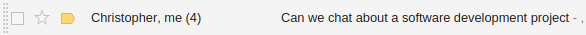
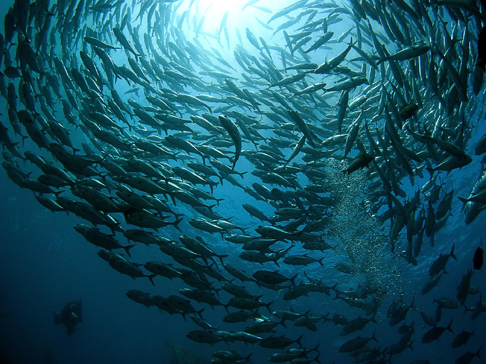

The path to
Computational statistics
and the tale of how I unexpectedly found it.
Tom Elliott

Who am I?
- PhD Candidate, predicting buses (started mid-2015)
- Lead iNZight developer (since ~2014/15)
How did I get here …?
At this point I …
- wanted to be a vet (until Yr13!)
- had a natural competency with computers
- CIE
- English, AS French, AS
- Maths, AS+A2 calculus + statistics →
- Chemistry, AS+A2
- Biology, AS+A2 "What is the null?" →
-
Bachelor of Science
Marine Science
Biological Sciences + Statistics -
BSc Honours, Masters, and now PhD …
all in statistics! -
2013 (Honours): email from Chris Wild:

The path to
Computational Statistics
and … what exactly is it?
Basically, any statistics that require a lot of computing.
A few examples …
-
Galaxies and blackholes (BSc Hons)
-

Fisheries management (MSc) -

Public transport (PhD, current)
Predicting bus arrival times
using estimated road network state
Aim …
Use travel times of previous buses travelling along road segments to improve arrival time predictions of upcoming buses
- Imaginary fleet, clustered around real bus
- Let them travel independently until new observation recieved
- "Bootstrap resample" based on proximity to real bus
- Travel …
- Resample …
- Travel …
- Resample …
- Travel …